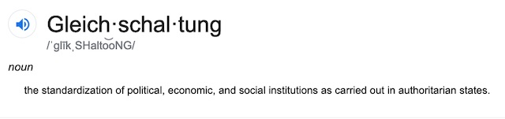

2019-07-28 08:00
If you’ve been biting your fingernails while watching HBO’s Years and Years or Hulu’s Handmaid’s Tale, don’t dismiss your Angst as the result of dystopian fiction. A lot of it is really happening. While the Imperial Presidency was tweeting White Supremacist attacks on enemies of all sorts, except (of course) whites and Christians, defying Congress and lying non-stop, members of his administration just served up a few more dishes in the endless buffet of Gleichschaltung Americans are being force-fed by Republicans working under the Führer principle.
This month Secretary of State Mike Pompeo launched his Commission on Unalienable Rights — an end-run around internationally-recognized standards of human rights. Instead of international laws, Pompeo wants to privilege his friends in Riyadh, K Street, and Jerusalem who espouse religious freedom but are hostile to secular freedoms. Margaret Drew, a law professor posting to Human Rights at Home, writes that “to accomplish this weeding out of human rights, Commission members will examine the Universal Declaration of Human Rights, among other documents, to determine what rights are fundamental and, among other questions, who has the power to grant rights. The likely answer is God, who no doubt will be whispering in the ears of commission members.”

Prosecuting people who leave water in the desert for asylum seekers, ending asylum in violation of international norms, and keeping asylum seekers in abysmal concentration camps all must be excused by redefining human rights. It’s something Orwell would appreciate.
Liberals justifiably don’t want to fund these assaults on human rights. Robin Wright, writing in the New Yorker, and noting Trump’s many friendships with dictators and dictatorial regimes (besides his own), cites the “unbelievable hypocrisy” of the commission. Serra Sippel, the president of the Center for Health and Gender Equity, said in a statement, “It’s time to call the Commission on Unalienable Rights what it really is: a thinly veiled religious fundamentalist panel that aims to cut back the human rights of people all over the world.”
Columbia University’s Human Rights Law Review publishes the “Trump Human Rights Tracker,” which charts human rights abuses under the Trump administration: “It is difficult to keep up with all that the new administration is doing that threatens human rights.” Masha Gessen writes in The New Yorker that “the new commission will contemplate who is and isn’t human, and who, therefore, possesses inalienable rights.” Fetuses will be accorded rights, and the LGBT community stripped of them. The ACLU writes that “Pompeo’s commission is a dangerous initiative intended to redefine universal human rights and roll back decades of progress in achieving full rights for marginalized and historically oppressed communities. It is likely to use religion as grounding to deny human dignity and equality for all. It will undermine the existing State Department’s well respected and legally-mandated Bureau of Democracy, Human Rights and Labor Affairs. And it will be a waste of taxpayer dollars, which would be better spent on implementing U.S. human rights treaty obligations and putting an end to Trump’s era of human misery and assault on our humanity.”
In an administration that cares little for diplomacy and international norms, Pompeo has become less a Secretary of State and (in line with Gleichschaltung) more a Propaganda Minister. In late June Pompeo convened the “Second Ministerial to Advance Religious Freedom.” The event was organized, in part, by Thomas Farr of the Religious Freedom Institute, whose own website betrays its Islamophobia. Predictably, VP for Christian Citizens Only Mike Pence delivered the keynote address.
Apparently running concentration camps, winking at journalists being hacked to death by “friends,” supporting decade-long occupations, and cozying-up to the world’s dictators are no impediments to targeting the real problem afflicting our society — those pesky constitutional protections which prevent the government from championing a specific religion — Christianity. Breakout sessions were led by representatives from a number of countries where religion is used to persecute non-religious and sexual minorities. Parallel to Pompeo’s “Ministerial,“ Human Rights Watch and the Human Rights Campaign were looking into the question of whether religious liberty is being used as a tool to deny secular freedoms.
If all this were not bad enough, members of the Trump Administration and his FOX News Cabinet participated in the National Conservatism conference at the D.C. Ritz-Carlton. As billed, the emphasis was on “nationalism.” For three days you could hear renowned White Supremacists and Islamophobes — including Tucker Carlson, Daniel Pipes, John Bolton, Daniel McCarthy, Amy Wax, Peter Thiel and others — argue for a return to Anglo-Saxon traditions. Organized by the Edmund Burke Society, Israeli-American and Kahanist “political philosopher” Yoram Hazony took center stage to outline the ultra-nationalist ideology — with a twist — that he was selling.
The nationalist ideology he was selling has a name: Zionism. Hazony argues that the United States needs its own form of Zionism — as opposed to U.S. imperialism (though many would argue that Zionism too is imperialistic). Daniel Luban summarizes Hazony’s argument in a piece in the New Republic: “Hazony frames his theory around a conflict (‘as old as the West itself’) between two principles of international order: ‘an order of free and independent nations,’ and a universal empire striving to unite all nations under a single legal regime. The former ideal, he suggests, originates in the Hebrew Bible, with the biblical kingdom of Israel serving as the first national state, but reached its apotheosis in early modern Europe under the ‘Protestant construction of the West.’ The golden age of nation-states stretched from roughly the Treaty of Westphalia in 1648 until the end of World War II. But after Hitler discredited nationalism (wrongly, for he was actually an imperialist rather than a nationalist) the imperial principle made a comeback, at least among ‘educated elites who have, to one degree or another, become committed to a future under an imperial order.’”
Hazony’s take-away is that nation-states should not expand, invade and then have to embrace internationalism like the Roman empire. Instead, they need to build walls around themselves and expel those who don’t fit nationalist criteria of race and religion.
As Jeet Heer summarizes in the Nation, “Instead of the blunt jeers heard at Trump rallies, where the name of Ilhan Omar raised the chant of “send her back,” the attendees of the conference spoke in more genteel terms about the need for national cohesion and an immigration policy that respected the nation’s cultural traditions. Yet these more mellifluous words differed from the hooting of Trump rallies only in terms of tone, not intent."
Missouri Senator Josh Hawley must have brought his bedside copy of the Protocols of the Elders of Zion with him because he mentioned “cosmopolitans” a number of times. “They run businesses or oversee universities here, but their primary loyalty is to the global community,” Hawley said of the “cosmopolitan elite.” “And they subscribe to a set of values held by similar elites in other places: things like the importance of global integration and the danger of national loyalties; the priority of social change over tradition, career over community, and achievement and merit and progress.”
Although Heer himself didn’t conclude Hawley’s speech was anti-Semitic, he noted: “Hawley’s use of the loaded word ‘cosmopolitan’ was combined with a denunciation of four academics, three of whom were Jewish. One of those was the philosopher Martha Nussbaum. When Hawley mentioned her, the crowd hissed. Hawley’s speech has been accused of containing anti-Semitic dog whistles.”
But Amy Wax didn’t need dog whistles; instead she had her weasel words. “Let us be candid,” she said. “Europe and the first world, to which the United States belongs, remain mostly white for now, and the third world, although mixed, contains a lot of nonwhite people. Embracing cultural-distance nationalism means, in effect, taking the position that our country will be better off with more whites and fewer nonwhites. Well, that is the result, anyway. So, even if our immigration philosophy is grounded firmly in cultural concerns, it doesn’t rely on race at all.”
Admittedly, these were people who can string two sentences together without a 280-character limitation or a Covfefe. But their racism is as crude as Trump’s or anything uttered at a Klan meeting.
The hyper-nationalism and racism we first glimpsed from Trump in 2015 was real. Trump is a racist. Trump is a nationalist. Trump is a neo-fascist. Trump is almost singularly obsessed with building a wall on the Mexican border, stopping even legal immigration, and disenfranchising voters of color. His 2016 campaign was based on white male privilege. His 2020 campaign is also likely to be about Whiteness, if not also Christian privilege. In fact, Trump has now doubled down on racist attacks on House members of color, and it seems calculated. Toluse Olorunnipa and Ashley Parker tried to make sense of these calculations in their Washington Post piece:
“Andy Surabian, a Republican strategist and former White House official, said that even if Trump’s rhetoric offends some suburban voters, they will still vote for him rather than siding with Democrats. ‘He can excite his base without alienating suburbia to the point where they’re not voting for him,’ he said. ‘That’s what a coalition is. Not everyone agrees with everything.’”
Note: Excite his base = appeal to white racism.
While Republicans are confident that racism will be a unifying strategy, Democrats aren’t so sure if it will succeed or backfire.
“Democrats are banking on the idea that even if Trump’s language excites his base, it is likely to offend a diverse coalition of voters who will turn out to defeat him. ‘I don’t think it’s going to depress Democrats. I think it’s going to make them angry,’ said Jennifer Palmieri, an adviser to Clinton’s 2016 campaign. Brian Schaffner, a political science professor at Tufts University, said a review of exit polling data from 2016 does not give a clear sense of what effect Trump’s amplified appeal to white working-class voters will have in 2020. ‘We can’t really know for sure from our data whether the white grievance rhetoric is going to mobilize more support for Trump in 2020,’ he said. ‘And it’s very possible that he may mobilize just as many — or maybe even more — opponents with this rhetoric.’”
Given how racist this country is, it’s a good bet it will win Trump the next election.